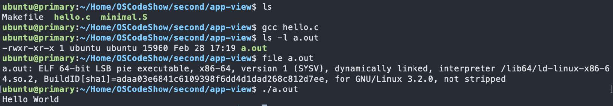
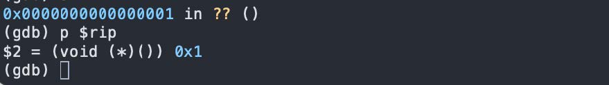

各种视角下的操作系统¶
一、概述¶
操作系统是极其复杂的软件系统：
- Linux 内核代码量从 1.0 版本的数万行，到 4.x 版本已突破 2000 万行；
- Windows 10 代码量超过 5000 万行，折合成书本约需 1000～2000 本（每本1000页，每页50行）；
- Linux 内核模块覆盖系统接口（system）、进程（processing）、内存（memory）、存储（storage）、网络（networking）、人机接口（human interface）等多个维度，组件间依赖关系极其复杂。
面对如此规模的系统，选对视角是理解它的关键——如同"盲人摸象"，从不同侧面切入才能形成完整认知。
操作系统的三条主线¶
| 主线 | 说明 |
|---|---|
| 软件（应用） | 操作系统的服务对象 |
| 硬件（计算机） | 操作系统直接运行于其上 |
| 操作系统本身 | 软件直接访问硬件带来麻烦太多，因而引入的中间件 |
理解操作系统，必须首先对其服务对象（应用程序）有精确的理解。
本讲从三个视角依次展开：
- 应用视角——操作系统是 syscall 的解释器
- 硬件视角——操作系统是直接访问硬件的 C 程序
- 抽象视角——操作系统本身就是一个状态机
二、应用视角下的操作系统¶
2.1 什么是程序？¶
从 Hello World 出发¶
用 IDE 一键运行虽然简单，但背后细节被完全隐藏。实际发生的过程分为两个阶段：
编译阶段（text → binary，目标文件存于磁盘）：
加载执行阶段（磁盘 → 内存 → CPU）：
-
Loader（加载器）将可执行 ELF 文件加载到内存，建立如下虚拟地址空间布局：
- Kernel memory（内核内存）
- User Stack（用户栈，从高地址向低增长）
- Shared libraries（共享库）
- Runtime Heap（运行时堆，向高地址增长）
- Global Data Segment（全局数据段）
- Read-only Code Segment（只读代码段，从
0x400000起）
注意：低地址
0x0～0x400000：刻意不映射（deliberately unmapped），访问此区域引发段错误 -
从
entry point开始执行
可执行文件结构（Typical ELF）¶
| 区段 | 内容 |
|---|---|
| header | 文件头信息 |
| mapping info header | 地址映射信息 |
| Code Instructions | 代码段（指令） |
| Initialized Data | 初始化数据段 |
| Symbol table & Debug Info | 符号表与调试信息 |
动手观察的工具¶
| 工具 | 用途 |
|---|---|
gcc hello.c |
编译生成 a.out |
file a.out |
查看文件类型（ELF 64-bit LSB pie executable...） |
objdump -d a.out |
反汇编查看机器码与汇编指令 |
gcc --verbose hello.c |
查看 gcc 实际执行的编译选项与步骤 |
gcc -static hello.c |
静态链接（文件体积将大幅增加） |
gcc -E hello.c |
仅执行预处理 |

手动控制编译流程¶
为什么直接 ld hello.o 会报错？
因为 printf 最终被编译为 puts，gcc 背后自动链接了 C 标准库（libc），手动 ld 时未指定该库，因此找不到符号。
为什么 ./a.out（删除 printf 后）出现 Segmentation fault？
通过 GDB 调试分析：

根本原因：main 函数通过 ret 指令返回时，它将栈顶的值（argc = 1）弹出给 RIP（程序计数器），导致 PC = 0x1。而 Linux x86-64 上，代码段从 0x400000 开始，0x0 ～ 0x400000 之间的低地址区域刻意不映射，访问地址 0x1 自然触发段错误。
正常情况下，内核的入口点不是 main，而是 _start。
_start 来自运行时启动代码（比如 crt1.o），它负责：
- 从栈里取出
argc/argv/envp - 做 libc 初始化
- 调用
__libc_start_main(...) - 再由它去调用
main(argc, argv, envp) main返回后，不靠ret乱跳，而是调用exit
所以正常流程其实是：
不是：
所以，万恶之源还是我们把ELF的入口点强行设成了main，但main不是一个“进程入口函数”，它只是一个“普通C函数”!
临时解决方案——加入无限循环：
这样 ret 指令永远不会执行，但这并非真正的解决办法。
如果我们非要将main作为入口点进入，那么就不要靠普通函数返回，改成主动向操作系统发出“退出进程”的系统调用，即syscall.
2.2 程序的状态机模型¶
二进制程序的状态机¶
一个运行中的程序可以用状态机来精确描述：
- 状态 = 内存 \(M\) + 寄存器 \(R\)（包含 PC、栈指针等所有寄存器）
- 初始状态 = 操作系统加载程序后设置的初始内存与寄存器值
- 状态转移 = 执行一条指令
每一步转移：
- 从
R[PC]取一条指令； - 解析指令，取出所需数据；
- 计算结果（可能存在非确定性，如
rdrand指令）； - 更新得到新状态 \((M', R')\)。
普通指令的局限性¶
程序中的所有普通指令（mov、add、sub、call、ret……）都只能用于计算，换句话说，它们只能操作内存与寄存器，无法终止程序、无法与外部世界交互（打印字符、读取文件等）。纯计算的状态机只能死循环或者出现 undefined behavior（如访问非法地址）。
解决方案：syscall 指令¶
syscall 是一条特殊的指令，它将当前进程的 \((M, R)\) 完全交给操作系统，由操作系统任意修改后再返回：
通过 syscall，程序可以：
- 读写文件/操作系统状态：将文件内容写入内存 \(M\)；
- 改变进程状态：创建进程（
fork/clone）、销毁自己（exit）等。
执行 syscall 指令，CPU 从用户态陷入内核态，交给 Linux 内核处理。
内核看到：系统调用号是 exit，参数是 1，于是就会：
- 终止当前进程
- 回收资源
- 把退出状态记成 1
- 把控制权交还给父进程/shell
这样程序就能正常结束，原来的崩溃路径是：
现在变成：
可用 man 2 syscall 及 man 2 syscalls 查看所有系统调用文档。
Hello World 的汇编实现（x86-64）¶
编译运行步骤：
在这个例子中，我们想强调的是：程序退出最终依赖的是系统调用、依赖的是操作系统。
程序 = 计算 + syscall¶
从应用视角看：
- 程序 = 一系列普通计算指令 +
syscall调用序列； - 操作系统 =
syscall的解释器（就如 CPU 解释普通指令一样）； - 对程序而言，
syscall的执行是透明的——程序只感知"执行了一条指令后状态变化了"。
C 程序的状态机模型¶
高级语言（C）具有更高层次的抽象，其状态机定义为：
- 状态 = 堆（heap）+ 栈（stack）+ 全局变量（globals）
- 初始状态 = 仅有一个栈帧
main(argc, argv)，全局变量取初始值 - 状态转移 = 执行一条简单语句：
- 执行调用栈栈顶帧
frames.top.PC处的简单语句； - 函数调用 = 压入新栈帧并将新帧
PC指向被调函数入口； - 函数返回 = 弹出当前栈帧（pop frame）。
注意：C 是更高层的抽象，没有"寄存器"的概念，编译器负责将 C 状态机翻译为汇编状态机：
.s = compile(.c)。不同优化级别（-O0、-O2）可产生不同的指令序列，但两种状态机在语义上应等价。
2.3 操作系统上的软件¶
操作系统中的任何程序，本质上都和 minimal.S 无异——它们都是包含 syscall 的状态机。
操作系统管理所有硬件与软件资源，应用程序只能通过操作系统允许的方式（syscall）访问系统中的对象，这种集中管理有助于解决资源抢占与冲突。
追踪程序执行：strace¶
strace（system call trace）利用内核提供的 ptrace 系统调用，允许观测一个进程的 syscall 序列：
示例输出（最小 Hello World）：
为什么能追踪进程？
因为所有进程都运行在操作系统的监控之下，某种意义上运行在操作系统提供的"虚拟机"中，而非直面硬件。操作系统通过 ptrace 系统调用，允许一个进程查看、甚至修改另一个进程的运行时寄存器，乃至植入代码。strace、GDB 都基于 ptrace 实现。
任何程序的一生¶
| 阶段 | syscall |
|---|---|
| 加载 | execve |
| 进程管理 | fork、execve、exit（strace -e trace=%process） |
| 文件/设备管理 | open、close、read、write（strace -e trace=%file） |
| 存储管理 | mmap、brk（strace -e trace=%memory） |
| 终止 | exit 或 exit_group |
操作系统中常见的应用程序¶
- Core Utilities（coreutils）：标准的文本与文件操作程序（GNU Coreutils），轻量替代品为 busybox；
- 系统/工具程序：
bash、binutils、apt、ip、ssh、vim、tmux、jdk、python等； - 其他应用：浏览器、音乐播放器、游戏……
结论：在应用眼中，操作系统就是 syscall 的解释器。
三、硬件视角下的操作系统¶
3.1 数字电路与状态机¶
计算机硬件的核心是数字电路，同样可以用状态机描述：
- 状态 = 寄存器（触发器 flip-flop）保存的值
- 初始状态 = RESET 信号触发后的值
- 状态转移 = 每个时钟周期，组合逻辑电路（NAND、NOT、AND、OR、NOR 等）计算寄存器下一个时钟周期的值
3.2 计算机硬件的状态机模型¶
整个计算机系统也是一个状态机：
- 状态 = 内存 + 所有寄存器的数值
- 初始状态 = CPU Reset 后的状态
-
状态转移：
- 任意选择一个处理器（多核系统）；
- 响应该处理器的外部中断（若有）；
- 从该 CPU 的 PC 取指令并执行。
3.3 CPU Reset¶
硬件与操作系统开发者之间存在严格约定，其基础是 CPU Reset 后的状态。
x86 Family（Intel® 64 and IA-32）¶
| 寄存器 | Reset 值 | 含义 |
|---|---|---|
EIP |
0x0000FFF0 |
程序计数器，指向 Reset Vector |
CR0 |
0x60000010 |
处理器处于实模式（Real Mode），分页机制关闭，CPU 处于 16-bit 状态 |
EFLAGS |
0x00000002 |
中断禁用（Interrupt disabled） |
其他架构的 Reset Vector¶
| 架构 | Reset Vector | 备注 |
|---|---|---|
| MIPS | 0xBFC00000 |
固定 |
| ARM | 0x00000000 |
可通过 Reset Vector Base Address Register 配置 |
| RISC-V | Implementation defined | 给厂商最大自由度 |
3.4 Firmware（固件）¶
CPU Reset 后 PC 指向的地址通过 Memory-mapped I/O 映射到主板上的 ROM，ROM 中存储的代码称为 Firmware（固件）。
厂商通过 Firmware 为操作系统开发者提供：
- 管理硬件和系统配置；
- 把存储设备上的代码加载到内存（二级 Loader 或操作系统）。
两种 Firmware 标准¶
| 标准 | 全称 | 特点 |
|---|---|---|
| BIOS | Basic Input/Output System | 传统标准，只支持有限硬件，代码空间受限（MBR 仅 512 字节） |
| UEFI | Unified Extensible Firmware Interface | 现代标准，支持驱动程序（EFI Driver）、支持 Secure Boot、性能更好、支持任意大小 .efi 可执行文件 |
为何需要 UEFI？
现代计算机硬件极其复杂（指纹锁、USB 蓝牙转接器等），这些设备都需要驱动程序才能访问，BIOS 的有限能力无法胜任。
3.5 Legacy BIOS 启动约定¶
- Legacy BIOS 将第一个可引导设备的第一个 512 字节（MBR，Master Boot Record）加载到物理内存
0x7C00； - 此时处理器处于 16-bit 实模式；
- 规定
CS:IP = 0x7C00； - 其他状态无约束，控制权交给程序员；
- MBR 布局：前 440 字节为 Boot Loader 代码 + 6 字节磁盘签名 + 64 字节分区表 + 2 字节魔数（
0x55AA）。
3.6 UEFI 启动流程¶
- 磁盘按 GPT（GUID Partition Table）格式化；
- 预留一个 FAT32 分区（EFI System Partition）；
- Firmware 加载
.efi格式的 PE 可执行文件（EFI Bootcode → OS Loader）； - EFI 应用可再次返回 Firmware。
3.7 加载器（Bootloader）工作细节¶
以 Legacy BIOS + 一级 Bootloader 为例，启动流程为：
MBR 中的 Bootloader 主要完成：
- 将处理器从 16-bit 实模式切换到 32-bit 保护模式（乃至 64-bit 长模式）；
- 跳转到 ELF32/ELF64 加载器；
- 按约定的磁盘镜像格式，将操作系统内核（ELF 文件）加载到内存；
- 跳转到内核入口：
对于 Linux，GRUB 是两阶段 Bootloader：MBR 中的 GRUB Stage 1 加载 Stage 2，Stage 2 再加载内核。
3.8 使用 QEMU + GDB 观察启动过程¶
QEMU 模拟完整的硬件系统，可以在模拟环境中观察每一条指令的执行：
通过此方法可以验证：
- CPU Reset 后 PC 指向
0xFFF0（Firmware 入口）； - MBR 的第一条指令被 BIOS 加载到
0x7C00； - 利用 GDB watchpoint 可以观察到是哪段代码将 MBR 内容写入内存。
3.9 Bare-metal 上的 C 代码¶
在没有操作系统的裸机上运行 C 程序，需要：
- MBR 中的 Bootloader 将 C 程序加载到内存；
- 使用编译器的特殊选项生成不依赖操作系统的目标文件：
- 静态链接：不依赖动态库；
- Freestanding 模式（
-fno-hosted）：不使用任何标准库。
代价是没有 printf、malloc 等，需要自行实现。
3.10 Abstract Machine（AM）抽象机器¶
为屏蔽不同硬件体系（x86、MIPS、RISC-V 等）的差异，本课程使用 AM（Abstract Machine） 作为硬件抽象层：
AM 提供以下扩展模块：
| 模块 | 全称 | 功能 |
|---|---|---|
| TRM | Turing Machine | 基础计算：内存、CPU、寄存器 |
| IOE | I/O Extension | I/O 设备：定时器、键盘、GPU 等 |
| CTE | Context Extension | 上下文切换（中断/异常处理） |
| VME | Virtual Memory Extension | 虚拟内存（页表机制） |
| MPE | Multi-Processor Extension | 多处理器支持、共享内存 |
AM 本身也是一个状态机：执行一条指令完成状态迁移，包含正常指令流和中断处理指令流两种路径。
3.11 两种执行流¶
普通控制流（Normal Control Flow）¶
遵循冯·诺依曼结构的指令循环：
PC 的变化仅由指令自身决定（顺序 +1，或跳转指令改变 PC）。
异常控制流（Exceptional Control Flow）¶
PC 的转移不受正常自增或分支指令控制，而由"外界"强制赋值：
- 触发条件：中断（interrupt）、异常（exception/fault）、自陷指令（trap，如
syscall）； - 处理器查表（实地址模式：中断向量表 IVT；保护模式：中断描述符表 IDT），跳转到对应的中断服务例程（ISR）；
- 处理完毕后恢复到之前的正常执行流。
异步事件处理示例：Ctrl+C 终止进程的流程：
- 键盘产生中断，操作系统中断处理程序捕获；
- 操作系统识别
Ctrl+C，向目标进程发送SIGINT信号； - 进程终止正常指令流，跳转到
SIGINT信号处理函数； - 信号处理函数执行，进程退出。
这是 Event-driven programming 的典型体现。
3.12 上下文切换（Context Switch）¶
进入异常控制流前，CPU 必须保存当前的执行现场（Context），否则无法恢复原来的执行。
什么是上下文？
寄存器的值（它们不像栈/堆保存在内存中，一旦被覆写，旧值即丢失）。不同架构的上下文略有差异，AM 统一抽象为 Context 结构体，主要包含：
| 内容 | 说明 |
|---|---|
| PC 寄存器（CS、IP） | 下一条指令地址 |
| 栈指针（SP、SS） | 当前栈位置 |
| 控制寄存器（EFLAGS 等） | 处理器标志位 |
| 虚拟地址翻译入口寄存器 | 页表基址等 |
| 其他数据寄存器（EAX、EBX …） | 通用寄存器 |
上下文切换过程（x86 示例）：
- 异常事件发生前：CPU 寄存器保存当前进程状态，用户栈正常使用；
- 异常事件发生时：CPU 将
EFLAGS、CS:EIP、SS:ESP等上下文压入内核栈，转向异常处理程序； - 异常处理结束，进程被再次调度：从内核栈弹出（POP）上下文，CPU 恢复原进程执行。
重要意义：Context 机制使操作系统能够保存和恢复任意进程的执行状态，从而实现分时复用——给程序制造了"独占 CPU"的假象。这是分时操作系统的核心。
关于中断嵌套：中断处理期间若又发生中断，通常做法是在进入中断处理程序时禁用中断（将新中断存入队列），处理结束时再重新启用。
3.13 在 AM 上实现操作系统¶
操作系统本质上只能控制两部分代码：
main函数（经历 CPU reset → BIOS → MBR → C 环境初始化后到达）：用于初始化整个计算系统环境；- 中断/异常响应函数（Interrupt/Trap/Fault Handler）：响应异步事件，实现各种内核服务。
这就是硬件眼中的操作系统。
结论：在硬件眼中，操作系统就是一个能直接访问计算机硬件的 C 程序。
四、抽象视角下的操作系统¶
4.1 操作系统本身就是状态机¶
前两个视角分别从"自顶向下"（应用）和"自底向上"（硬件）观察操作系统，但没有从全局把握。抽象视角将操作系统视为一个状态机，从整体上理解其生命周期。
4.2 操作系统的一生¶
初始化阶段¶
初始化结束后，内核形成如下状态（内核内存布局）：
| 区域 | 内容 |
|---|---|
| 内核代码区 | 内核代码 |
| 内核堆 | 动态分配的内核数据结构 |
| 内核栈 1, 2, … | 每个进程一个内核栈 |
| Meta(进程 1, 2, …) | 进程控制块（PCB）：进程 id、栈指针、PC 等 |
| Meta(文件 1, 2, …) | 文件元信息 |
| Meta(地址 1, 2, …) | 地址空间元信息 |
运行阶段¶
操作系统初始化完成后，变成 interrupt/trap/fault handler 的集合，状态被动迁移：
用户进程执行 syscall（trap）：
硬件中断发生：
时钟中断等硬件事件直接触发内核中断处理程序，内核可借此执行调度，切换到不同的用户进程。
4.3 操作系统的抽象状态机总结¶
| 特征 | 描述 |
|---|---|
| 内部状态 | 进程/线程元信息、文件元信息、地址空间元信息、内核栈、内核堆、内核代码区 |
| 状态迁移触发条件 | ① 用户进程执行 syscall（trap）；② 硬件中断事件（时钟中断、I/O 完成中断等） |
| 主动性 | 操作系统的状态是被动迁移的，自身不主动执行 |
| 角色 | 初始化后成为 interrupt/trap/fault handler |
4.4 用代码实现抽象操作系统（os-model.py）¶
API 设计¶
| syscall | 功能 |
|---|---|
sys_choose(xs) |
返回 xs 中的一个随机选项（模拟非确定性） |
sys_write(s) |
输出字符串 s |
sys_spawn(fn) |
创建从 fn 开始执行的新状态机（线程/进程） |
sys_sched() |
随机切换到任意状态机执行 |
借用 Python Generator 机制¶
Python 的 Generator（生成器）天然支持"暂停执行、保存状态、恢复执行"：
生成器中的 yield 相当于"让出 CPU 并告知调用者当前状态"，这与 syscall 的语义非常契合。
Thread 类（封装状态机）¶
操作系统内核（syscall 解释器）¶
应用程序示例¶
4.5 更完整的 Toy OS：Mosaic¶
mosaic.py 提供更接近真实 Linux 的系统调用映射：
| mosaic syscall | Linux 对应 | 作用 |
|---|---|---|
sys_spawn(fn) |
pthread_create |
创建从 fn 开始执行的线程（共享内存） |
sys_fork() |
fork |
创建当前状态机的完整复制（独立堆） |
sys_sched() |
调度器 | 切换到随机线程/进程执行 |
sys_choose(xs) |
rand |
返回 xs 中的随机选择 |
sys_write(s) |
printf |
向调试终端输出字符串 |
sys_bread(k) |
read |
读取虚拟磁盘块 k 的数据 |
sys_bwrite(k, v) |
write |
向虚拟磁盘块 k 写入数据 |
sys_sync() |
sync |
将所有虚拟磁盘数据落盘 |
设计要点：
- 进程/线程均为 Generator 对象；
- 线程共享堆内存，进程拥有独立的堆（clone）；
- 虚拟磁盘简化为 Python dict；
- 实际系统中程序随时可能被外部事件（如时钟中断）打断，mosaic 对此做了简化。
Mosaic 的彩蛋——枚举所有调度序列：
当执行 sys_sched() 时，Mosaic 可以枚举所有可能的调度序列，生成一棵状态树：
这等价于一台非确定性图灵机（Nondeterministic Turing Machine），可用于验证并发程序在所有可能调度下的正确性——这是形式化验证（model checking）的核心思想。
五、总结¶
操作系统在三个视角下分别呈现出不同的面貌，三者相互补充，共同构成完整的认知：
| 视角 | 核心结论 |
|---|---|
| 应用视角 | 操作系统是 syscall 的解释器；程序 = 计算 + syscall，是包含系统调用的状态机 |
| 硬件视角 | 操作系统是直接运行在硬件之上的 C 程序，拥有完整计算机的控制权限（中断、I/O） |
| 抽象视角 | 操作系统本身是状态机：内部状态为其管理的资源，状态被动迁移（syscall / 硬件中断触发）；初始化后成为 interrupt/trap/fault handler |
六、阅读材料¶
- [CSAPP] 第 1、7、8 章（计算机系统概览、链接、异常控制流）
- [OSPP] 第 1、2 章（操作系统概述）
- 浏览 GNU Coreutils 和 GNU Binutils 官网，建立常用命令行工具的整体印象
- 浏览 GDB 文档目录，了解感兴趣的章节，例如 "Reverse Execution"、"TUI: GDB Text User Interface"
- 参考 busybox 和 toybox 项目，查看常用命令行工具的简化实现
- AM（Abstract Machine）：https://jyywiki.cn/OS/AbstractMachine/index.html
- AM 代码仓库：https://github.com/NJU-ProjectN/abstract-machine
- AM 示例内核：https://github.com/NJU-ProjectN/am-kernels